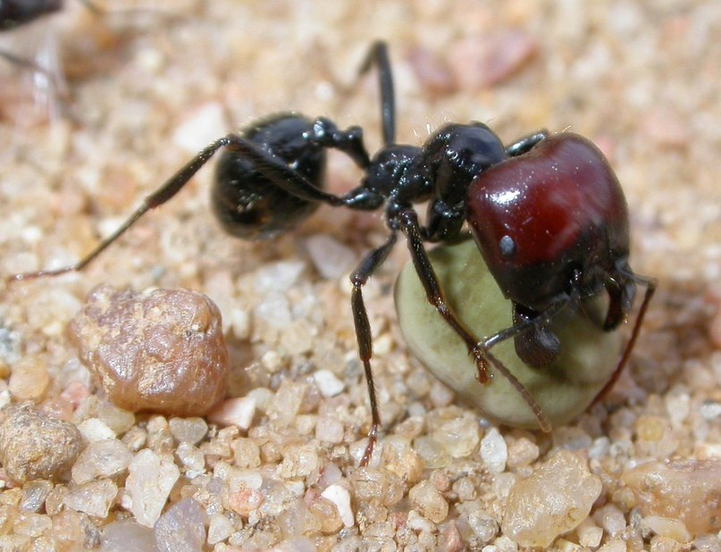

Messor barbarus, или красноголовый муравей-жнец, обитает в Западном Средиземноморье – от Испании и Португалии до Северной Африки – и считается одним из самых узнаваемых представителей рода жнецов. Своё имя он получил благодаря яркой бордово-красной голове у крупных солдат и маток, тогда как остальное тело у них чёрное.
Одна из самых впечатляющих черт – резко выраженный полиморфизм. В одной колонии сосуществуют крошечные рабочие длиной всего 3–4 мм и массивные солдаты, достигающие 12–15 мм. Солдаты – это не просто «крупные рабочие»: их главная задача – разгрызать твёрдые оболочки крупных семян, которые мелкие рабочие просто не могут одолеть. Матка же вырастает до 14–16 мм и может жить до 20 лет, что делает её одной из самых долгоживущих среди муравьиных королев.
Гнёзда – это настоящие подземные города. Они уходят на глубину до 5 метров, а площадь поверхности вокруг входа может достигать 25 м2. Внутри обустроены сухие камеры-зернохранилища, где семена хранятся, не прорастая. Когда запас нужно употребить, муравьи коллективно пережёвывают семена в однородную массу, которой кормят личинок и матку.
Самое неожиданное открытие касается генетики. Оказалось, что у этого вида существует уникальная генетическая система определения пола и каст, а колонии способны успешно развиваться даже при ограниченном разнообразии генов.
В Испании данный вид долгое время считался вредителем: на его долю приходится 50–100% потерь семян на полях. Однако позже выяснилось, что эти муравьи приносят и пользу – они уничтожают семена сорняков и участвуют в распространении полезных растений.
Сегодня это популярный объект для домашних муравьиных ферм. Он неприхотлив в уходе, интересен своим поведением и наблюдением за строительством подземных лабиринтов, поэтому его часто содержат в домашних формикариях.